Hitchhiker’s guide to building statistical models
Over the past 10 weeks, we have done a lot of work learning about the machinery of statistical models. But learning how different tools work is not the same as learning how to use them to build something.
One of the biggest challenges in doing scientific research is to thinking very carefully, deliberately, and clearly about all parts of the process. It is all too easy to go through the motions and do what looks like science, but only ever have a research question that is ill-defined and ambiguous. No amount of fancy statistics can provide a clear answer to an under-specified question.
The Ultimate Question
“I checked it very thoroughly,” said the computer, “and that quite definitely is the answer. I think the problem, to be quite honest with you, is that you’ve never actually known what the question is.”
The Hitchhikers Guide to the Galaxy, Douglas Adams.
At a big picture level, research goals typically fall into one of three categories:
| Aim | |
|---|---|
| descriptive | summarise characteristics |
| predictive | forecast the future for use in screening/selection/monitoring |
| explanatory | identify if one thing causes another or understand the mechanism by which it happens |
A large amount of psychological research falls into the “explanatory” category, aiming to understand if some variable X influences another variable Y, or by how much, or if the influence differs across another variable Z. We have been using statistical associations to provide us with answers to such questions, while at the same time endlessly hammering the phrase “correlation does not imply causation”. It is a valid statement, but it is not very useful: if our aim is to understand the world and how it works, we cannot shy away from thinking about causality when defining our research questions. It is true that statistical analyses can only ever provide us with associations, but depending on what variables we measure and how we build our models, there are countless different ‘associations’ that we could report. It is crucial that we do not lose sight of our target, which is so often causal in nature.
Research questions in the social sciences will very often use language that is implicitly causal. A frequent trap that researchers fall into is to have such a question, but then fail to engage with the assumptions that underpin whether their analysis is actually able to address that question. Words such as “effect”, “influence”, “explain”, “prevent”, “improve”, “protect” etc., are all terms that imply causation, asking a question about what would happen to a variable \(Y\) in the event that variable \(X\) changed. Without careful thought (about both design and analysis) a statistical association might not tell us anything about the specific question that we are actually interested in.
Important Note: we’re not going to learn anything in this reading that magically allows us to interpret our estimates as ‘causal’. No such thing exists.
Consider this reading more as a gentle encouragement to think more carefully about which association it is that you actually want to report.
“causality is not extra‐statistical but instead is a logical antecedent of real‐world inferences” (Greenland, 2022, p. 3).
To build the intuition of how we can improve our research questions, let’s move to an example.
Suppose that we are in the realms of primate behaviour, and we are interested in social settings and engagement with cognitive puzzles - i.e., how long they spend working through sets of puzzles until they get bored/give up.
- Research Question: Do chimpanzees in group-housing enclosures (with >2 chimps) engage with puzzles for longer than chimpanzees in paired-housing enclosures (2 chimps)?
Take a few minutes to reflect on whether the above research question is clear and specific. What exactly is it asking? Is it descriptive? predictive? explanatory?
As it currently reads, this may feel like it is fairly clear, but it is actually quite under-specified. As well as not being clear about whether our question is about all chimpanzees, just adults, or just those in zoos, the question does not explicitly differentiate between whether we are interested in:
- a descriptive question, targeting the observed difference in ‘time-engaged-with-puzzles’ between chimpanzees currently in group-enclosures and those currently in paired-enclosures?
- an explanatory question, targeting the difference in puzzle engagement for a given chimpanzee in group-enclosure compared to how long that same chimpanzee would spend with puzzles if it lived in a paired-enclosure?”
How to specify clear research questions
A clearly defined research question should have two things, that can be defined outside of any statistical model:
- a unit-specific quantity
- this is the thing we want to know about, defined at the level of the unit of interest. It could be a single value \(Y_i\) for a given unit \(i\), or a counterfactual comparison of \(Y_i\) under different levels of another variable \(X\), which we could be write as, e.g.,: \(Y_i^{X=1} - Y_i^{X=0}\)1
- a target population
- this is the set of units over which we are aggregating our quantity.
Returning to our chimp example, we can move to a somewhat more clearly stated question:
- Research Question: For adult chimpanzees housed in UK zoos, what is the average effect on time-spent engaging with puzzles due to being placed in group-housing enclosure (>2 chimps) compared to being placed in paired-housing enclosure (2 chimps)?
Note that the word “effect” here is stating that we want to know how much of the chimpanzee \(i\)’s “puzzle-time” is because they are in a group-enclosure.
This is a causal question, and as such concerns what we would expect chimp \(i\)’s “puzzle-time” to be like in the counterfactual world where we observed them in the other type of enclosure. The unit-specific quantity that we are interested in here is \(\text{PuzzleTime}_i(\text{Group-Housing}) - \text{PuzzleTime}_i(\text{Paired-Housing})\), and these correspond to the values that are in the diff column in Table 1. We want the average of these across a sample that represents the target population
| chimp | puzzlet_paired | puzzlet_group | diff |
|---|---|---|---|
| chimp-a | 23 | 27 | 4 |
| chimp-b | 30 | 33 | 3 |
| chimp-c | 35 | 36 | 1 |
| chimp-d | 24 | 27 | 3 |
| ... | ... | ... | ... |
| ... | ... | ... | ... |
| chimp-w | 19 | 21 | 2 |
| chimp-x | 24 | 27 | 3 |
| chimp-y | 17 | 22 | 5 |
| chimp-z | 21 | 23 | 2 |
Lundberg, I., Johnson, R., & Stewart, B. M. (2021). What is your estimand? Defining the target quantity connects statistical evidence to theory. American Sociological Review, 86(3), 532-565.
Mapping out the universe
Now that we have a well defined research question, there are lots of ways we might design a study to address it. We’ll assume that we are measuring “puzzle-time” the same way in all of these - by giving each chimpanzee an hour to work through a series of puzzles, and seeing how long they engage with the puzzles before they give up/get bored/wander off.
There are different ways we could study chimpanzees from both paired- and group-enclosures doing these puzzles:
1. observational study
Randomly sample chimpanzees living in both types of enclosure, and administer our puzzle-series task to all of them, also recording other variables required to identify the quantity of interest.
2. between-chimp randomized experiment
Randomly allocate half of chimpanzees into group-enclosures, and half into paired-enclosures, and (after a period of time that we would expect any effect to have taken place), administer our puzzle task.
3. within-chimp randomized experiment
Place each chimpanzee in both types of enclosure (counterbalancing the order in which these occur for each chimp), and then administer our puzzle task.
We will not cover 3 right now - this design involves multiple measurements of the puzzle task per chimpanzee, and we will cover statistical models for such designs in MSMR. Here, we will focus on options 1 and 2, to illustrate how our understanding of the how the data has come about informs the statistics we will use to address our research question. This includes understanding the bit about “other variables required to identify the quantity of interest”.
In our options for desiging a study of chimp-puzzling, in both the scenarios 1 and 2 detailed above, we only ever observe a given chimpanzee in one type of enclosure. This means that we can never observe the values in both of the puzzlet_paired and puzzlet_group columns for the same chimp - we can never directly observe the effect of enclosure type on puzzle-engagement-time for any given chimpanzee:
| chimp | puzzlet_paired | puzzlet_group | diff |
Observed Data
|
|
|---|---|---|---|---|---|
| enclosure_type | PUZZLET | ||||
| chimp-a | 23 | 27 | 4 | Paired | 23 |
| chimp-b | 30 | 33 | 3 | Paired | 30 |
| chimp-c | 35 | 36 | 1 | Paired | 35 |
| chimp-d | 24 | 27 | 3 | Paired | 24 |
| ... | ... | ... | ... | ... | ... |
| ... | ... | ... | ... | ... | ... |
| chimp-w | 19 | 21 | 2 | Group | 21 |
| chimp-x | 24 | 27 | 3 | Group | 27 |
| chimp-y | 17 | 22 | 5 | Group | 22 |
| chimp-z | 21 | 23 | 2 | Group | 23 |
Our understanding of the study design (our theory about the ‘data generating process’) is absolutely crucial in informing how we use our observed data to assess the research question appropriately. Knowing how chimps were allocated to the different types of enclosure will be necessary to determine what to put in our model.
To build the intuition, we are going to look at some diagrams. These diagrams represent our understanding of how the various attributes influence one another in the real world to generate the data that we have - they are visualisations of data generating processes!
“Data Generating Process”
A data generating process (DGP) is a process in the real world that “generates” the data we are interested in. Or, more broadly “how the data have come to be the way they are”. We don’t know the true DGP, but we usually have some understanding to allow us to have a rough idea of it.
It may be easier to think of a DGP first in a closed system: imagine we’re thinking about whether a toaster produces some toast. Several things need to happen in order for me to get my toast. We can draw a picture of how we understand the process to work:
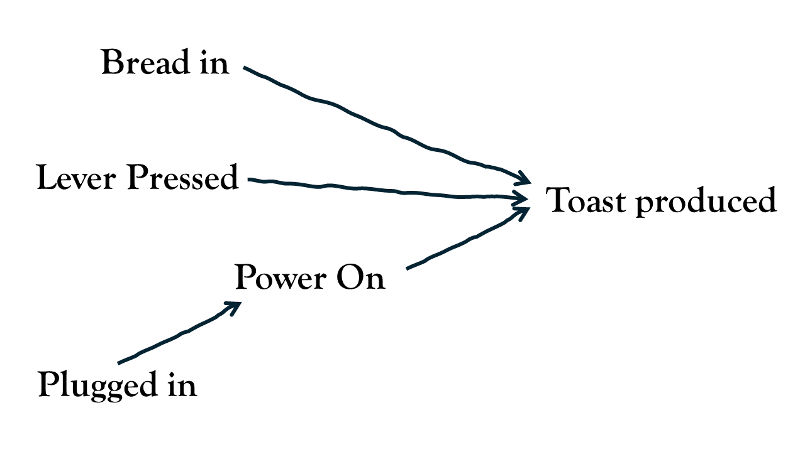
In diagrams like these, the words represent variables - quantifiable attributes in the real-world. The arrows represent how these different real-world attributes relate to one another to produce an outcome (toast).
In our chimpanzee studies, if we think about out research question in isolation, we can draw it as an arrow going from EnclosureType to PuzzleTime.
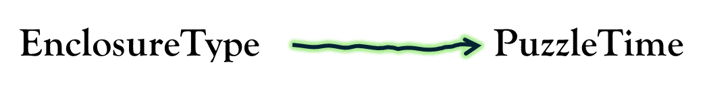
In the real world, however, there are lots of other things that influence why a chimpanzee might spend more time engaging with puzzles: its age, sex, genetics, hunger, social status, rearing history, hormones etc., etc. To simplify our explanations, let’s just pretend there’s only one other thing that influences puzzle-engagement in chimpanzees, and that is its age, with older chimpanzees being less curious than younger ones. How age relates to other variables in our diagram depends on how the study is designed, as well as what we theorise about the world. For instance, let’s suppose that we have good reason to suspect that zoos tend to place younger chimpanzees in paired-enclosures, and older ones in group-enclosures.
Let’s consider how this knowledge fits with our understanding of our two studies:
1. observational study
If our study was simply observing chimpanzees in whatever type of enclosure that we find them in, then we need to understand how that allocation happened. If zoos tend to place younger chimpanzees in paired-enclosures, then we would draw a line from Age to EnclosureType.
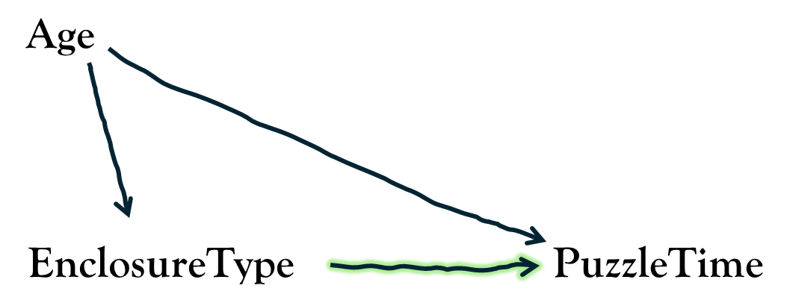
2. randomised experiment
If our study is instead a randomised experiment, then in our diagram, we know that there is no arrow going from Age to EnclosureType. In fact, we know that there should be no arrows going into EnclosureType, because it’s just been randomly allocated!
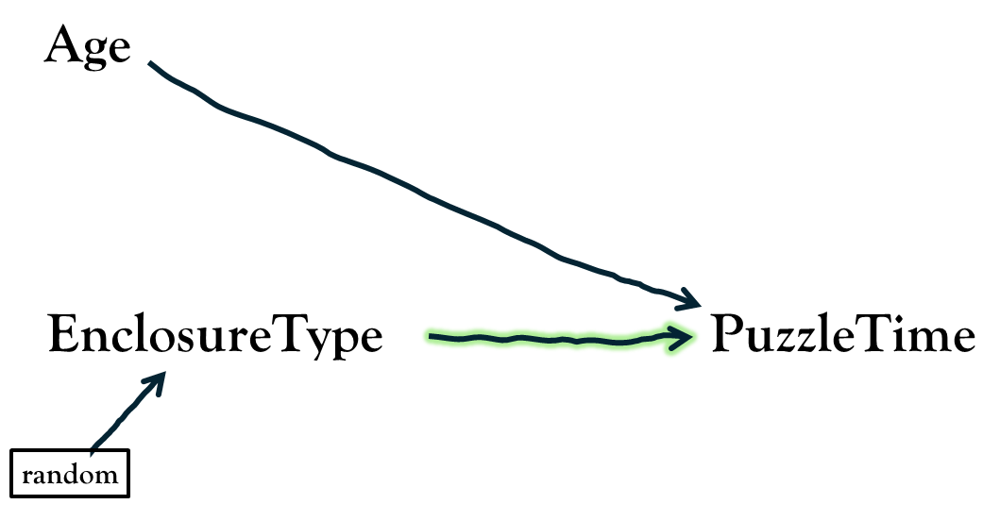
In the observational study, because zoos are tending to place younger chimpanzees in paired-enclosures, then our data will likely reflect this: the chimps we observe from paired-enclosures might show greater time spent with puzzles than those we observe from group-enclosures because they tend to be younger.
If we fail to take into account the age differences, it is impossible to isolate the effect of enclosure type on puzzle-time - it would be ‘confounded’ by age. By contrast, in our randomised experiment, because the only thing influencing which enclosure a chimp is allocated to is the random flip of a coin, it means that we should end up with similar aged chimps in each type.
To illustrate how this understanding of the data generating process changes how we should build our models, we have simulated data for the two scenarios above so that you can play around with it yourself. In both the cases, we have made it so that being in a group-enclosure makes every individual chimpanzee spend on average exactly 3 minutes more engaging with the puzzles than they would be in a paired-enclosure.
- In https://uoepsy.github.io/data/chimp_obs.csv we have an observational study where the allocation of chimps into paired/group-enclosures is dependent on age: zookeepers tended to put younger chimpanzees in paired-enclosures.
- In https://uoepsy.github.io/data/chimp_rct.csv, we have a experiment in which chimpanzees are randomly allocated into either paired or group enclosures.
In both cases, we have the chimpanzee’s ages as a third variable. The question arises of whether to include age in our model. Let’s compare the models with and without age in both scenarios. We are interested, remember, in “the effect of enclosure type on puzzle-time”, which in this case corresponds to the enclosure_type coefficient (the difference in time spent on puzzles in "Paired" vs "Group" enclosures). Remember that in both scenarios, we have made it so that this difference is 3 ("Group" vs "Paired") for every chimp (or -3 if for "Paired" vs "Group").
1. observational study
# TODO
# chimp_obs <- read.csv("https://uoepsy.github.io/data/chimp_obs.csv")
m1 <- lm(PUZZLET ~ enclosure_type, chimp_obs)
m2 <- lm(PUZZLET ~ age + enclosure_type, chimp_obs)| (1) | (2) | |
|---|---|---|
| (Intercept) | 34.1 [33.3, 35.0] | 44.0 [38.5, 49.5] |
| enclosure_typePaired | -0.1 [-1.5, 1.3] | -3.0 [-5.0, -1.0] |
| age | -0.4 [-0.6, -0.2] | |
| R2 | 0.001 | 0.376 |
2. randomized experiment
# TODO
# chimp_rct <- read.csv("https://uoepsy.github.io/data/chimp_rct.csv")
mr1 <- lm(PUZZLET ~ enclosure_type, chimp_rct)
mr2 <- lm(PUZZLET ~ age + enclosure_type, chimp_rct)| (1) | (2) | |
|---|---|---|
| (Intercept) | 35.4 [33.7, 37.1] | 44.0 [40.5, 47.5] |
| enclosure_typePaired | -3.0 [-5.4, -0.6] | -3.0 [-4.6, -1.4] |
| age | -0.4 [-0.6, -0.2] | |
| R2 | 0.222 | 0.659 |
Note that in the randomised experiment, age is a significant predictor, but including/excluding it does not change the estimate of the enclosure_type coefficient. In this toy example, the enclosure_type coefficient doesn’t change at all, whereas in a real randomised experiment it probably would change just a little bit (this is just because we’ve made it so that the randomisation has resulted in exactly the same ages of chimps in both types of enclosure — which is what randomisation achieves in the long-run).
While including/excluding age in the model doesn’t bias in our estimate of the enclosure_type coefficient, its inclusion will increase our precision (note the confidence interval gets narrower), because we are explaining more variance in our outcome variable (making the variance explained by enclosure easier to detect2).
Contrast this with the observational study, in which it is absolutely necessary to adjust for age in order to ‘de-confound’ the effect of enclosure on puzzle-time. If we fail to include age in our model then we might erroneously conclude that smaller enclosures lead to more aggression, rather than less!
optional note for wizards: exchangeability of potential outcomes
It’s tempting to think that what we’re aiming for is having the same aged chimps in both types of enclosure - i.e., it feels like what we want is “balanced” covariates. Indeed, this is why people design studies that “match” subjects on things like age and sex - for instance, for each chimp observed in a paired enclosure, finding a chimp of the same age in a group enclosure. Technically however, this isn’t actually the thing we’re aiming for, it is simply one way to get it.
To identify the effect of enclosure_type on PUZZLET, what we are wanting is “exchangeability of the potential outcomes”.
The “potential outcomes” here are the values of PUZZLET we would have measured if we could see a chimp in either enclosure type.
In the situation of the observational study, the sets of potential outcomes (puzzlet_paired, puzzlet_group) are not comparable for the two groups of enclosure_type that we have observed (Table 3) — where enclosure_type=="Group", these values tend to be slightly lower than where enclosure_type=="Paired". This is because of age!
Unobservable
|
Observed Data
|
|||||
|---|---|---|---|---|---|---|
| chimp |
Potential Outcomes
|
Individual Effect
|
age | enclosure_type |
Realised Outcome
|
|
| puzzlet_paired | puzzlet_group | diff | PUZZLET | |||
| chimp-a | 23 | 27 | 4 | 23 | Paired | 23 |
| chimp-b | 30 | 33 | 3 | 16 | Paired | 30 |
| chimp-c | 35 | 36 | 1 | 15 | Paired | 35 |
| chimp-d | 24 | 27 | 3 | 20 | Paired | 24 |
| ... | ... | ... | ... | ... | ... | ... |
| ... | ... | ... | ... | ... | ... | ... |
| chimp-w | 19 | 21 | 2 | 24 | Group | 21 |
| chimp-x | 24 | 27 | 3 | 20 | Group | 27 |
| chimp-y | 17 | 22 | 5 | 29 | Group | 22 |
| chimp-z | 21 | 23 | 2 | 24 | Group | 23 |
To think about how ‘adjusting for age’ helps this, simply consider how the comparison works when comparing chimpanzees of the same ages. For instance, in Table 3, “chimp-d” and “chimp-x” are in different enclosure types, but are both the same age, and their potential outcomes are the same!
Randomisation achieves this because there is nothing that influences the allocation into different enclosures.
Darren Dahly: Out of balance - https://statsepi.substack.com/p/out-of-balance
Our takeaway might be that we should always conduct experiments, and this is a reasonable first thought — if we have randomly allocated our observations to values of our explanatory variable \(X\), we don’t have to worry about measuring all the possible confounding variables, because it is only randomness that influences what value of \(X\) an observation takes. Indeed, “randomised controlled trials” are generally considered the gold standard for estimating an ‘effect’. Remember however, that it may often be unethical or impossible to intervene and force people into a certain condition, and in situations where we can intervene, we often do so at the sacrifice of ecological validity.
More importantly, while randomisation may assist with confounding variables prior to allocation, experiments do not magically allow us to make causal claims, nor do they absolve us from thinking about the data generating process to inform our analytical decisions.
Let’s suppose that in our two studies of chimpanzees we also record the average number of hours of “enrichment activities” that each chimpanzee receives each week (these are things the zookeeper might do such as scatter-feeding nuts, puzzle feeders, or novel scent trails). Should we include this variable in our analysis in the observational study? What about in the experimental study? Will it matter?
To answer, this, we need to consult our understanding of how the variable fits in to the data generating process. We talk to the zookeepers, read up on literature, and decide that it is likely to sit somewhere along path between EnclosureType and PuzzleTime: zookeepers tend to spend more time on enrichment activities to the group enclosures, and that enrichment activities encourage chimps to be more curious, better at solving puzzles etc. In this case, the Enrichment Hrs variable fits in our data generating process as so:
1. an observational study
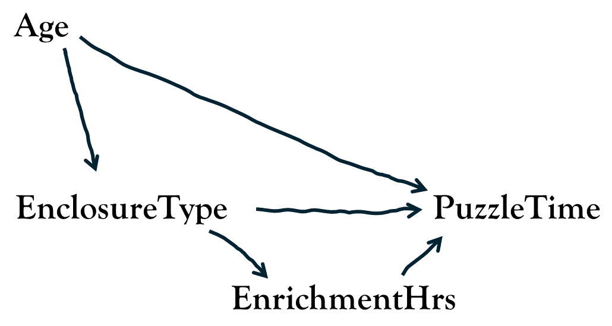
2. a randomised experiment
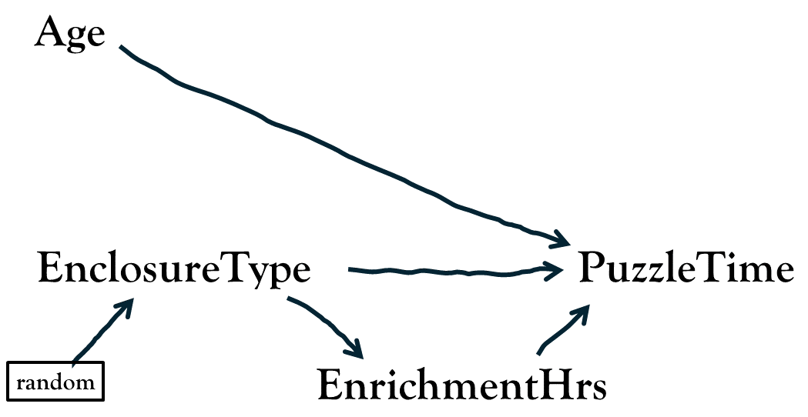
If we are right with our above view of the data generating process, which model should we use in order to address our research question? Try it out for yourself in the two simulated datasets! Remember, that in both of datasets, we have made it so that chimpanzees spend exactly 3 minutes more on puzzles in group-enclosures than they would in paired-enclosures (and exactly 3 minutes less in paired-enclosures than they would in group-enclosures) — i.e., we have made it so that the “effect of paired/group housing on puzzle-time” is exactly 3.
1. observational study
# TODO
# chimp_obs <- read.csv("https://uoepsy.github.io/data/chimp_obs.csv")
m1 <- lm(PUZZLET ~ enclosure_type, chimp_obs)
m2 <- lm(PUZZLET ~ age + enclosure_type, chimp_obs)
m3 <- lm(PUZZLET ~ enrichment_hrs + enclosure_type, chimp_obs)
m4 <- lm(PUZZLET ~ age + enrichment_hrs + enclosure_type, chimp_obs)| (1) | (2) | (3) | (4) | |
|---|---|---|---|---|
| (Intercept) | 34.1 [33.3, 35.0] | 44.0 [38.5, 49.5] | 25.8 [12.7, 38.8] | 35.6 [24.1, 47.2] |
| enclosure_typePaired | -0.1 [-1.5, 1.3] | -3.0 [-5.0, -1.0] | 2.0 [-1.6, 5.5] | -0.9 [-4.1, 2.3] |
| age | -0.4 [-0.6, -0.2] | -0.4 [-0.6, -0.2] | ||
| enrichment_hrs | 0.5 [-0.3, 1.3] | 0.5 [-0.1, 1.2] | ||
| R2 | 0.001 | 0.376 | 0.073 | 0.448 |
2. randomized experiment
# TODO
# chimp_rct <- read.csv("https://uoepsy.github.io/data/chimp_rct.csv")
mr1 <- lm(PUZZLET ~ enclosure_type, chimp_rct)
mr2 <- lm(PUZZLET ~ age + enclosure_type, chimp_rct)
mr3 <- lm(PUZZLET ~ enrichment_hrs + enclosure_type, chimp_rct)
mr4 <- lm(PUZZLET ~ age + enrichment_hrs + enclosure_type, chimp_rct)| (1) | (2) | (3) | (4) | |
|---|---|---|---|---|
| (Intercept) | 35.4 [33.7, 37.1] | 44.0 [40.5, 47.5] | 27.7 [2.0, 53.3] | 36.4 [18.9, 53.9] |
| enclosure_typePaired | -3.0 [-5.4, -0.6] | -3.0 [-4.6, -1.4] | -1.1 [-7.9, 5.7] | -1.1 [-5.7, 3.5] |
| age | -0.4 [-0.6, -0.2] | -0.4 [-0.6, -0.2] | ||
| enrichment_hrs | 0.5 [-1.1, 2.1] | 0.5 [-0.6, 1.5] | ||
| R2 | 0.222 | 0.659 | 0.235 | 0.672 |
Note that, in both the observational study and the randomised experiment, when we include enrichment_hrs in the model, the coefficient for enclosure_type changes. Given our diagrams above, this actually makes perfect sense - the coefficient no longer captures the total effect of “what would happen to a chimp’s puzzle-time were it to be in a paired (instead of group) enclosure?”. It changes to being “what would happen to a chimp’s puzzle-time were it to be in a paired (instead of group) enclosure, but the amount of time on enrichment activities did not change”.
Note that this may in some cases be an interesting quantity, but it is not the quantity we were interested in when we specified our research question. To take a much more extreme simplification, imagine that we want to assess if lighting a fire will set off the fire alarms in 7GS, so we go and set fires in a randomly chosen set of rooms3 and record whether the alarm goes off, along with measuring the volume of smoke in the rooms.
Because fire alarms respond to smoke, not fire, when we fit a model of lm(alarm ~ smoke + fire), the coefficient for fire would be zero, because the effect of the fire on the alarm is entirely via the increased volume of smoke.
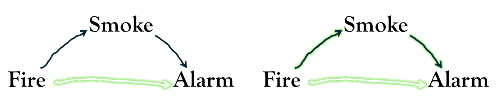
This is because our question was “will lighting a fire set off an alarm?” (all the arrows in green on the right hand side above) and not “will lighting a fire, but (somehow) not changing the volume of smoke in the room, set off an alarm?” (the single green arrow in the left hand below). In this extreme case, the direct arrow from Fire → Alarm doesn’t actually exist!
Returning to our chimpanzee examples, we are now at the point where we know that:
1. observational study
To answer our research question in this study, we need to adjust for age in our model, and we don’t want to adjust for enrichment_hrs (because that’s part of the effect we’re interested in).
2. randomised experiment
To answer our research question in this study, we don’t want to adjust for enrichment_hrs. Adjusting for age will help our power to detect the effect that we’re interested in, but not including it in our model will not bias our results.
Another way in which we might veer off target with out analysis can be demonstrated with the inclusion of a further variable. Suppose that, on reviewing videos of the chimpanzees in our study completing the puzzle-task, we notice that some chimps were simply not engaging much and fell asleep during their 1-hour puzzle session. We decide to record which chimps fell asleep, and then adjust for that variable in our models. This creates a problem if, according to our DGP, Asleep is influenced by both the predictor of interest EnclosureType and the outcome PuzzleTime. This is a plausible scenario because a) chimpanzees in group-housing might live in more stimulating environments, meaning they take more opportunities to rest, and b) when a chimp stopped engaging with the puzzles, there was not much else for them to do for the rest of the hour.
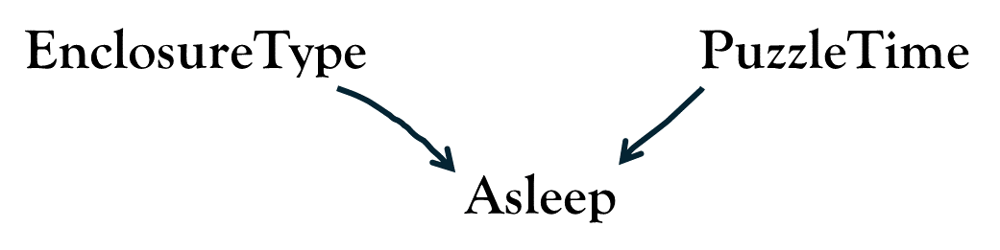
According to our DGP, chimps are more likely to fall asleep in the study session either because they are in group-housing or because they have spent less time engaging with the puzzles (or both)
To see how this causes a problem, suppose that there was no effect of EnclosureType on PuzzleTime, meaning that we shouldn’t be able to see any pattern between the two (hence the lack of an arrow between the two in the figure above). If we recorded whether or not each chimpanzee fell asleep, and then include this in our model lm(PUZZLET ~ asleep + enclosure_type), then we will actually create a spurious association between PUZZLET and enclosure_type. Think of it like we did with age, and consider how the Paired vs Group chimps would differ when we compare chimps of the same value in asleep. If you consider all the awake chimps, then suddenly we see a spurious association:
enclosure_type=="Group"is indicative of high puzzle engagement.enclosure_type=="Paired"is indicative of low puzzle engagement.
This same mechanism can be seen at work in “selection bias”, which is when this sort of variable decides whether or not we include/exclude observations from a study. For instance, a study which didn’t discarded any chimps who fell asleept (meaning they aren’t included in the analysis), creates the same spurious association because it looks at the effect specifically within the awake chimpanzees.
You can play around with this yourself:
mr1 <- lm(PUZZLET ~ enclosure_type, chimp_rct)
mr5 <- lm(PUZZLET ~ asleep + enclosure_type, chimp_rct)
# selecting on awake:
chimp_rct_awake <- chimp_rct |>
filter(asleep == 0)
mr6 <- lm(PUZZLET ~ enclosure_type, chimp_rct_awake)| (1) | (2) | (3) | |
|---|---|---|---|
| (Intercept) | 35.4 [33.7, 37.1] | 35.9 [34.0, 37.8] | 36.3 [34.4, 38.2] |
| enclosure_typePaired | -3.0 [-5.4, -0.6] | -3.2 [-5.6, -0.8] | -4.0 [-6.6, -1.5] |
| asleep | -1.5 [-4.4, 1.3] | ||
| R2 | 0.222 | 0.262 | 0.376 |
As another example, if we wanted to know if “attractiveness tends to co-occur with talent”, but we only take a sample of famous people, then we might see a negative correlation, because famous people tend to be famous because they are either talented or attractive (see https://colliderbias.herokuapp.com/)
Optional: More generally
Let’s think the unthinkable, let’s do the undoable. Let us prepare to grapple with the ineffable itself, and see if we may not eff it after all
The Hitchhikers Guide to the Galaxy, Douglas Adams.
If you’re planning on heading into observational research, then all of the stuff we have been talking about here is incredibly important. To ignore this sort of stuff will make it much harder for your work to provide meaningful insights.
Many questions of interest to us are concerned with estimating “the effect of \(X\) on \(Y\)”, or some extension of this (e.g., “does the effect of \(X\) on \(Y\) depend on \(Z\)?”).
Part of the challenge of getting this from a statistical model is ensuring that the specific effect of interest is ‘identified’ (i.e., under our assumed DGP, the observed data is sufficient to isolate the ’what happens to \(Y\) if \(X\) changes without being confounded or masked by other variables). What we do with other variables will depend on where we see them fitting in the DGP.
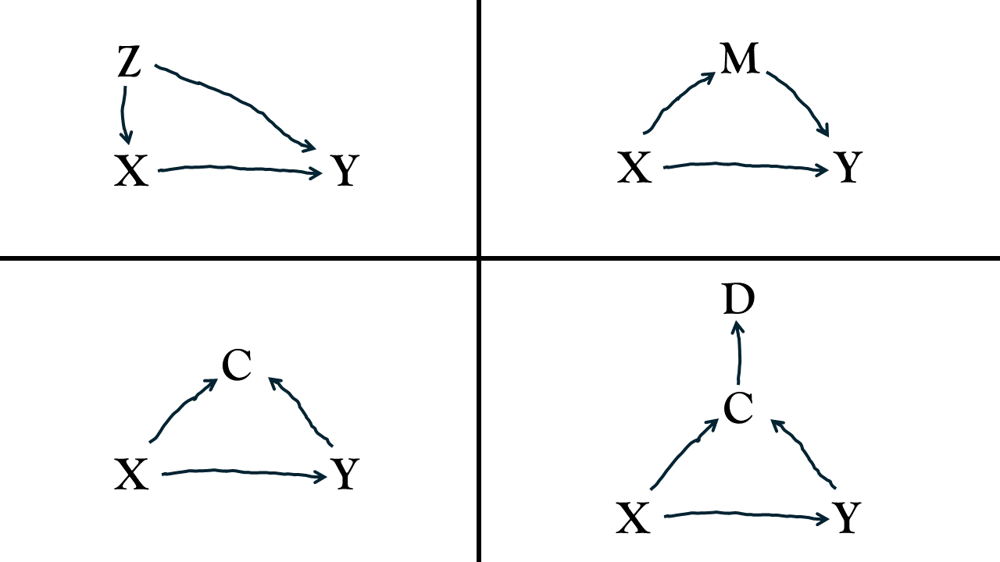
We can think of information as flowing along the arrows in these diagrams, with flow passing through nodes that have the form →V→ and ←V→ but not →V←. As such, there are three places a third variable might be placed - it could be a ‘confounder’ (variable \(Z\)), a ‘mediator’ (variable \(M\)) or a ‘collider’ (variable \(C\)). It could also be a descendent (variable \(D\)) of some other variable.
In our image above:
- The path \(X\)←\(Z\)→\(Y\) is by default “open” (letting information flow). By adjusting for \(Z\) in our model, we close it.
- The path \(X\)→\(M\)→\(Y\) is by default open. Adjusting for \(M\) in our model closes it.
- The path \(X\)→\(C\)←\(Y\) is by default closed. If we adjust for \(C\) in our model, we open it. If we adjust for \(D\) in our model, we would also open this path!
So if our DGP had all variables included (see the image to the right), then in order to isolate the specific effect of interest \(X\)→\(Y\), we should:
- close the back doors paths going into \(X\)
- leave open the required front doors paths coming out of \(X\) open that capture the causal effect of interest
If we want “the effect of \(X\) on \(Y\)”, this therefore means including \(Z\) in our model, but not \(M\) or \(C\) or \(D\). Including \(M\) would fail to capture the total effect of \(X\) on \(Y\), and including \(C\) or \(D\) would introduce a spurious association.
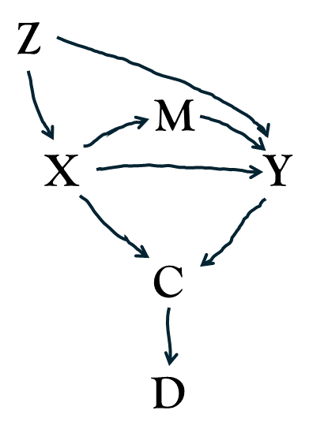
Regression adjustment is just one way to “control” for third variables, and there are many more sophisticated approaches if you are interested.4 In practice, however, even the most sophisticated tools cannot fully make up for the fact that specifying a clear Data Generating Process (DGP) for observational studies is incredibly difficult. This is especially true in psychology, where constructs can be ill-defined and almost everything correlates with everything else!
It is still possible to get meaningful insights from observational studies, but it takes a lot more careful thought. In fact, the diagrams that we have been using (“Directed Acyclic Graphs”, or “DAGS”) are actually one of the key tools that is used! While an entire ecosystem of sophisticated quantitative methods has arisen from this sort of work, satisfyingly answering a causal question from observational data typically is only possible in very specific circumstances.
In the spirit of “let’s all try to do better,” here is some general advice for a workflow:
Prior to data analysis:
- Define your target question clearly up front. (What exact quantity are you trying to estimate?)
- Draw your assumed DGP, including all relevant variables you can think of, especially the unobservable/unmeasured ones.
- Figure out your “identification” strategy. Using the drawing in 2, think about how you will need to analyse the data in order to estimate your target quantity. If it’s impossible to ‘de-confound’ the estimate via the standard ‘back door’ closing, this is where it may be necessary to learn about some of the more sophisticated methods. Use this to inform what data to collect/what data is required.
After data analysis:
- Be transparent about structural limitations. consider including your drawing in your paper (this is very common in fields like health research). Consider conducting sensitivity analyses to determine how strong an unmeasured confounder would have to be to flip your conclusions (see e.g., the tipr package).
- Chatton, A., & Rohrer, J. M. (2024). The causal cookbook: Recipes for propensity scores, g-computation, and doubly robust standardization. Advances in Methods and Practices in Psychological Science, 7(1)
The biggest problem for observational studies is that things are rarely as simple as in the toy example we have used here. There are loads and loads of other things that might fit into our data generating process. Figuring out what they are, and how they fit in, is extremely difficult. We may end up with a much more complex diagram,5 and TODO
- Wysocki, A. C., Lawson, K. M., & Rhemtulla, M. (2022). Statistical control requires causal justification. Advances in Methods and Practices in Psychological Science, 5(2).
- Rohrer, J. M. (2024). Causal inference for psychologists who think that causal inference is not for them. Social and Personality Psychology Compass, 18(3)
- Cinelli, C., Forney, A., & Pearl, J. (2024). A crash course in good and bad controls. Sociological Methods & Research, 53(3), 1071-1104
Key Takeaways
Don’t Panic.
The Hitchhikers Guide to the Galaxy, Douglas Adams.
- observational studies are hard.
- experiments are great!
- if nothing else, draw your theory about the data generating process ahead of time, and use it to inform what variables to collect, and what to put in your model
If you feel the draw of experimental work, then this is all useful stuff, but we would strongly recommend devoting time to reading “Experimentology” by M. Frank and others (available online for free here).
If you’re excited by observational research, then you’ve got your work cut out! However, there are lots and lots of tutorials out there, and the field is constantly developing. One particular book that stands out (for me at least) for its engaging and accessible language is Nick Huntington-Klein’s “the effect” (available online for free here).
Additional considerations
Would it save you a lot of time if i just gave up and went mad now?
The Hitchhikers Guide to the Galaxy, Douglas Adams.
TODO What about descriptive work?
The phrase “No causes in, no causes out” (Nancy Cartwright) is a useful reminder that to interpret a statistical estimate as an “effect”, we need to make causal assumptions — assumptions about the data generating process.
What then, if we are not trying to answer an explanatory question, and are sticking with descriptive work?
Example
Suppose our goal is to estimate the prevalence of severe depression.
This is purely descriptive: we’re aiming to simply summarise the proportion of people with a diagnosis of severe depression.
To demonstrate, let’s see pretend we complete data for the entire population. This is no longer an estimate, it’s just the true value we’re interested in:
table(dep_fullpop$status) |>
prop.table()
0 1
0.79921 0.20079 With access to the full population, we know that 20% of the population has severe depression.
In practice, however, we rarely have the full population data, and so instead we might conduct a survey on a random sample of people. But we still need to think carefully about the data generating process - we should think about the things that might lead people to decide to complete (or not complete) a questionnaire on depression.
Typically, people who are severely depressed a way less likely to ever fill out these surveys. So we can think of our population as containing people like this:
head(dep_fullpop)# A tibble: 6 × 2
status will_complete_survey
<int> <dbl>
1 0 1
2 0 1
3 0 1
4 1 0
5 0 1
6 0 1What that means is, when we take a sample, we are far less likely to see those people who have severe depression, and we are therefore likely to underestimate the prevalence of depression.
This code mimics taking a sample of 100 people who ‘will complete the survey’
dep_sample <- dep_fullpop |>
filter(will_complete_survey==1) |>
slice_sample(n = 100)
table(dep_sample$status) |>
prop.table()
0 1
0.86 0.14 Even with a bigger sample of 10,000 the problem persists!
dep_sample <- dep_fullpop |>
filter(will_complete_survey==1) |>
slice_sample(n = 10000)
table(dep_sample$status) |>
prop.table()
0 1
0.8833 0.1167 The problem here is that we are using statistics in such a way that misrepresents the data generating process. We are assuming that we have the situation in ?@fig-desc Left, whereas in reality it looks more like ?@fig-desc Right.
TODO figure
It is clear then, that maintaining that “I’m only describing things” does not absolve us from thinking about the data generating process.
“No causes in, nothing out” (Richard McElreath)
TODO Can’t we just report ‘associations’?
Occasionally, people will appear to avoid engaging with difficult thinking about the data generating process by maintaining that their results are only ever ‘associations’ or ‘correlations’.
It is true that all our statistics cannot transcend the world of ‘associations’ - all any of us ever report are associations.
However, this somewhat misses the key point that we need clarity in our research question in order to decide which association it is that we actually want to report.
An example from Rohrer et al shows a commonly used template for research:
- Does money bring happiness << implicitly causal question
- report associations between income and happiness from a cross-sectional survey << does not target the causal question
- << implicitly causal answer to 1.
- state correlation != causation
(see e.g., https://youtu.be/IKdCuY-GjP4?si=4gX-94YjgieCnygI&t=1618 )
TODO what about moderation/interaction?
If both variables involved in the interaction can be controlled/manipulated then we can design a randomised experiment accordingly, for instance following a “2x2 factorial design”, in which participants are randomly allocated to one of the following rows:
expand_grid(
predictor_1 = LETTERS[1:2],
predictor_2 = LETTERS[3:4],
outcome = "..."
) |> gt::gt()| predictor_1 | predictor_2 | outcome |
|---|---|---|
| A | C | ... |
| A | D | ... |
| B | C | ... |
| B | D | ... |
Because allocation to both predictors is randomised, we can study the interaction outcome ~ predictor_1 * predictor_2 without worrying about confounding variables.
However, very often there are situations in which researchers wish to study an interaction in which one (or both) of the predictors is an observed attribute (not something they can manipulate).
For example:
https://journals.sagepub.com/doi/10.1177/25152459211007368
https://datacolada.org/80
df <- tibble(
w = scale(rnorm(200))[,1],
x = rep(0:1,100),
z = scale(rnorm(200,.5*w,1))[,1],
lp = -w + z + x + x*z + -x*w,
y = rnorm(200,lp,.0001)
)
sjPlot::tab_model(
lm(y~x,df),
lm(y~x*z,df),
lm(y~w+x*z,df),
lm(y~x*(w + z),df)
)| y | y | y | y | |||||||||
| Predictors | Estimates | CI | p | Estimates | CI | p | Estimates | CI | p | Estimates | CI | p |
| (Intercept) | 0.10 | -0.22 – 0.43 | 0.536 | 0.03 | -0.26 – 0.32 | 0.834 | -0.02 | -0.10 – 0.07 | 0.686 | 0.00 | -0.00 – 0.00 | 0.683 |
| x | 0.70 | 0.24 – 1.15 | 0.003 | 0.90 | 0.49 – 1.31 | <0.001 | 1.00 | 0.88 – 1.13 | <0.001 | 1.00 | 1.00 – 1.00 | <0.001 |
| z | 0.53 | 0.26 – 0.81 | <0.001 | 1.27 | 1.18 – 1.36 | <0.001 | 1.00 | 1.00 – 1.00 | <0.001 | |||
| x × z | 0.45 | 0.04 – 0.87 | 0.033 | 0.52 | 0.39 – 0.64 | <0.001 | 1.00 | 1.00 – 1.00 | <0.001 | |||
| w | -1.58 | -1.65 – -1.51 | <0.001 | -1.00 | -1.00 – -1.00 | <0.001 | ||||||
| x × w | -1.00 | -1.00 – -1.00 | <0.001 | |||||||||
| Observations | 200 | 200 | 200 | 200 | ||||||||
| R2 / R2 adjusted | 0.043 / 0.039 | 0.251 / 0.240 | 0.933 / 0.932 | 1.000 / 1.000 | ||||||||
- if you are interested in Y ~ X * Z
- if one (or both) of X or Z is not randomised, then it may well be necessary to control for other variables W.
- simply controlling for Y~W+X*Z will not deconfound your X*Z interaction in the event that the true data generating process involves W interacting with X or Z.
e.g., suppose we randomly allocate people to X, but are wanting to know if the effect of X differs by Z. - Z and Y share a common cause of W, so we should control for W. - if our target estimate is what a hypothetical intervention on Z would do to the effect on Y of intervening on X, then it may also be necessary to control for X*W, in the event that W also moderates the effect of X.
TODO what about longitudinal studies?
We will get more of this in MSMR, but sometimes people get stuck assuming that anything measured “within participants” avoids any problems with confounding.
For example, let’s suppose we do:
3. within-chimp study
Place each chimpanzee in both types of enclosure (counterbalancing the order in which these occur for each chimp), and then administer our puzzle task.
We have data that looks like this:
N = 40
n_groups = 20
g = rep(1:n_groups, e = N/n_groups)
t = rep(rep(0:1,e=N/n_groups/2),n_groups)
b = rep(0:1,e=n_groups/2)[g]
x = c(rep(rep(1:0,e=N/n_groups/2),n_groups/2),
rep(rep(0:1,e=N/n_groups/2),n_groups/2))
u = t * 1 * b
Gcov = Matrix::nearPD(matrix(c(1,0,0,1),nrow=2))$mat
res = MASS::mvrnorm(n_groups, mu=c(0,0), Sigma=Gcov,empirical=TRUE)
re = res[,1][g]
re_x = res[,2][g]
lp = (0 + re) + .2*u + (1 + re_x)*x
y = rnorm(N, mean = lp, sd = .001)
df <- data.frame(x,b,t,u,g=factor(g), y)
library(lme4)Loading required package: Matrix
Attaching package: 'Matrix'The following objects are masked from 'package:tidyr':
expand, pack, unpacklmer(y~1+x+(1|g),df) |> summary()Linear mixed model fit by REML ['lmerMod']
Formula: y ~ 1 + x + (1 | g)
Data: df
REML criterion at convergence: 116.7
Scaled residuals:
Min 1Q Median 3Q Max
-1.48085 -0.51617 0.00081 0.40385 1.45927
Random effects:
Groups Name Variance Std.Dev.
g (Intercept) 0.9691 0.9844
Residual 0.4806 0.6932
Number of obs: 40, groups: g, 20
Fixed effects:
Estimate Std. Error t value
(Intercept) -0.0000854 0.2692228 0.000
x 1.1002096 0.2192185 5.019
Correlation of Fixed Effects:
(Intr)
x -0.407lmer(y~1+u+x+(1|g),df) |> summary()Linear mixed model fit by REML ['lmerMod']
Formula: y ~ 1 + u + x + (1 | g)
Data: df
REML criterion at convergence: 115.3
Scaled residuals:
Min 1Q Median 3Q Max
-1.41345 -0.52711 -0.00907 0.49026 1.46480
Random effects:
Groups Name Variance Std.Dev.
g (Intercept) 0.8955 0.9463
Residual 0.4983 0.7059
Number of obs: 40, groups: g, 20
Fixed effects:
Estimate Std. Error t value
(Intercept) -0.0000854 0.2639916 0.000
u -0.4782634 0.4045832 -1.182
x 1.3393413 0.3012482 4.446
Correlation of Fixed Effects:
(Intr) u
u 0.000
x -0.313 -0.672ggplot(df,aes(x=x,y=y,col=u))+geom_point()+
facet_wrap(~g)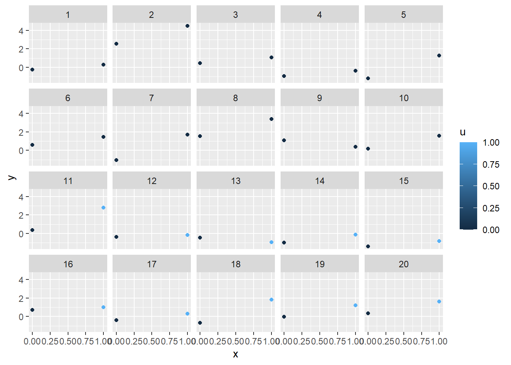
TODO do not simply control for all available variables
TODO do not just simply control for all pre-treatment variables
- zoo-budget past >> enclosure size
- zoo-budget past >> stress
- enclosure size >> stress
- aggression >> stress
- genetic >> aggression
- genetic >> stress
TODO do not use predictive criteria for an explanatory question
- if your research goal is explanatory do not use predictive criteria to determine what to include in your model
note that if our goal is to explain, then the predictive accuracy of a model is not a good criteria for choosing which model we should use.
something like a simple model comparison of residual SS (using anova(mod1, mod2)) will make us think that X is the “better model”, because the addition of XX explains more variance — it does a better job of predicting Y. The issue is that using model fit criteria (anything like an F test, AIC, BIC, etc) doesn’t care about the direction of the arrows in your theory.
for example, we can add in XX to predict Y, but that really doesn’t make any sense to do.
TODO not all coefficients are the same
- we can’t interpret coefficients of confounders in the same way as we do the focal predictor (table 2 fallacy)
Footnotes
More complex questions involving interactions might then be framed in terms of comparisons of comparisons!↩︎
Think of this as \(\frac{\text{signal}}{\text{noise}}\). Including age doesn’t change the signal, but it does make the noise smaller.↩︎
please don’t do this!↩︎
These typically aim to achieve balanced covariates by using algorithms that match observations or re-weight them based on an estimated ‘propensity’ for receiving one treatment value versus another. In our chimp example, this would involve matching or weighting based on predicted probabilities from a model like:
glm(enclosure_type ~ age + ..., family = binomial).↩︎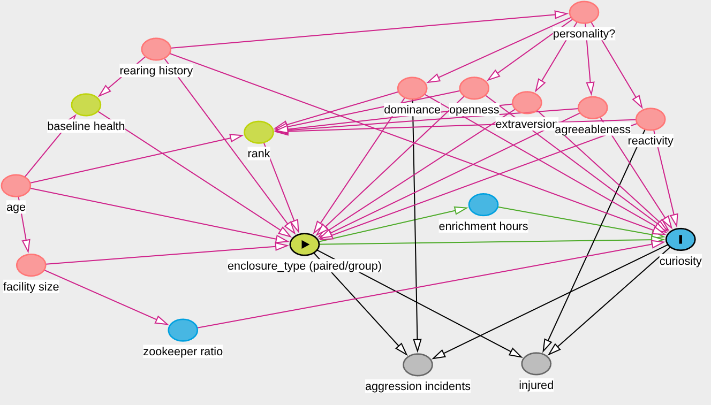
this is just as many things as I could think of in ~10 minutes! I don’t know anything about how zoos work, or about primatology, so I don’t know how many of these arrows are justified!↩︎